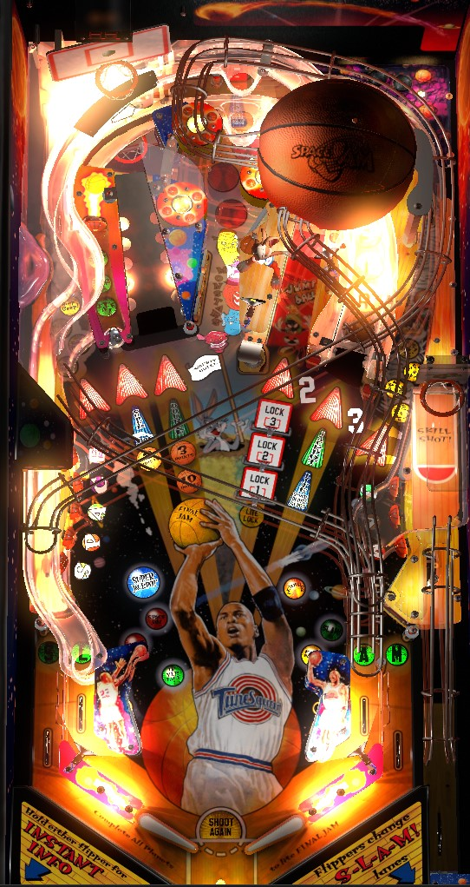

The best points in the game come from standard multiball, which is qualified by shooting the center Jump Ball ramp a lot (3 shots the first time, 6 the second time, etc). In multiball, follow the lit jackpots: left and right ramps, then orbits and center ramp, then captive ball, then right ramp -> top standup target. To play through game progression, shoot everything else on the table in single ball play- 3 captive balls, 4 shots to each orbit, 4 right ramps, both lower standup target banks, pop bumpers, and bottom lanes- in addition to getting a captive ball super jackpot in multiball.
The skill shot is a precise-power plunge that gets the ball to go through the basketball hoop near the shooter lane. Use the flippers to choose which reward you would like from a successful skill shot: 300,000 points, Light Lock, Wabbit Hole, or Super Pops. A successful skill shot awards 1 basketball point in addition to the selected award. If the game settings allow for the ball to be plunged by pressing both flippers at once, doing so will always give credit for a successful skill shot, even if the pinball doesn't go through the basketball hoop.
After a successful skill shot, immediately shoot the ball up the left ramp and into the big basketball hoop for 10 basketball points. I believe this also scores 300,000 pinball points.
Shoot the Jump Ball center ramp (with the basketball on it) repeatedly to advance toward multiball. For the first multiball, it takes 1 ramp shot to light all 3 locks at once. For the second multiball, it takes 1 shot to light each lock. For the third multiball, it takes 2 shots to light each lock. I am not sure if multiball gets harder to start after the 3rd time. As soon as 3 balls are locked, multiball begins. The Jump Ball ramp should always be able to be shot from either flipper.
The jackpot value in multiball starts at 500,000 points and increases by 2,000 with every switch hit anywhere in the game. If the first jackpot made in phase 1 is the left Basket ramp, all jackpots are doubled, with each switch adding 4,000 to the jackpot instead. There are 4 phases to the jackpot progression.
A multiball restart is available at the center Jump Ball ramp for 15 seconds if multiball ends with no jackpots collected at all.
Light all 7 planets to qualify Final Jam wizard mode. Each planet requires various shots to a certain feature in the game.
After all 7 planets are lit, shoot the left Basket ramp to start Final Jam wizard mode. This is a 5-ball multiball with unlimited ball save for 60 seconds. The left Basket ramp's value starts at 100,000 points, and any switch in the game increases that value by 10,000. Shoot the left ramp as many times as you can to repeatedly collect the value. Relocking a ball in either the Wabbit Hole or the center Jump Ball ramp doubles the value of the Final Jam award for 15 seconds; relocking balls in both of those locations will triple the value of the Final Jam award for 15 seconds. This mode can be worth a ton or points or absolutely nothing depending on your consistency with making baskets at the left ramp. Once the 60 seconds runs out, all balls are allowed to drain, and single ball play will restart with all planets unlit so they can be collected again.
Hit the 2 and 3 post targets on either side of the right ramp to spell the number 23 and light the center scoop for a Wabbit Hole mystery award. You can also receive a Wabbit Hole award by selecting it as your skill shot. Bugs Bunny will randomly pick one of 3 awards taken from this list.
Every odd-numbered completion of the top drop targets scores 100,000 points. Every even-numbered completion of the top drop targets starts In Yer Face mode, where you have 30 seconds to hit the captive ball 3 times for 200,000, then 300,000, then 400,000 points.
You receive 1 basketball point for making a skill shot, 2 for hitting the captive ball, 3 for making the left Basket ramp, or 10 for making the left Basket ramp when On Fire is running or as a super skill shot immediately after making a standard skill shot. At 23 basketball points, you receive 300,000 points; at 45 basketball points, extra ball is lit at the center Jump Ball ramp. I believe these awards loop every 45 basketball points, so you get another 300,000 pinball points at 68 basketball points, and another extra ball lit at 90 basketball points.
Space Jam has a conventional in/out lane setup. All lanes award letters in Slam; go through an unlit lane to light it, and use flipper lane change to rotate the locations of the lit lanes.
During multiball, after lighting or collecting the super jackpot, I have seen the display show the message "Special is lit at out lanes" but there is not actually a light that can show this in the out lanes and I have never actually gotten a playfield special from the out lanes.
Bonus is calculated as 10,000 points, plus an additional 10,000 for each orbit and ramp made on that ball, plus 30,000 for each currently lit planet, all multiplied by the bonus multiplier. Bonus multiplier is advanced one at a time by the Slam in/out lanes and maxes out at 6x. I do not know of any ways to collect the bonus mid-ball or hold the base bonus or multiplier from one ball to the next.